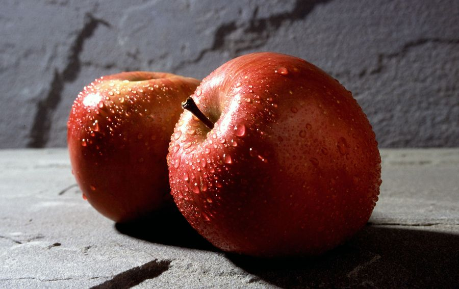
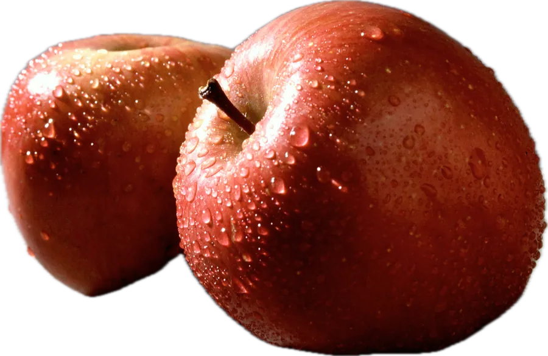
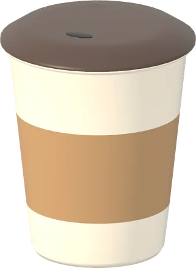
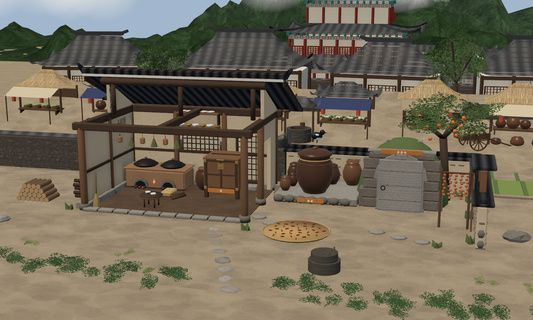
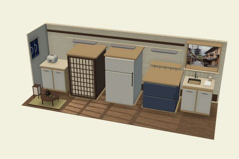
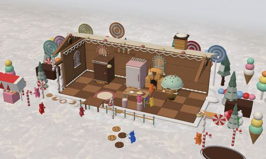

사진으로 간편하게 등록


내 식품을 3D로 차곡차곡

취향대로 고르는 나만의 주방

조선 한양 
리우 코파카바나 
카페 하늘 해적선 
우주선 
교토 자동차 공장 
과자집 아테네 아크로폴리스 
몽골 게르 카파도키아 오버룬 야전 주방
소비기한, 잊기 전에 챙겨요
이미지·데모 안내
영문 데모는 실제 앱 녹화와 상품·주방 렌더 이미지의 편집 장면을 연결했습니다. 식품과 위젯 정보는 예시 데이터입니다.
예시 사과 사진: 미국 농무부 농업연구청(USDA ARS), 퍼블릭 도메인 · 출처

앱의 실제 주방 이미지입니다. 일부 주방은 포인트가 필요합니다.
기한 알림은 식품의 안전성을 판단하지 않아요. 상품 표시와 보관 방법을 따라 주세요.
Google 로그인은 어디에 사용하나요?
Google 로그인은 Google 계정을 Pantrip 계정에 연결하여 다시 로그인하고 계정의 포인트와 구매한 아이템을 이용하는 데 사용합니다. Google 비밀번호는 Pantrip에 전달되지 않습니다. 식품 동기화에 별도로 동의하면 식품 정보와 사진을 계정에 저장하고 다른 로그인 기기와 동기화합니다. 로그인만으로 식품 동기화가 켜지지는 않습니다. Apple 로그인도 지원합니다.